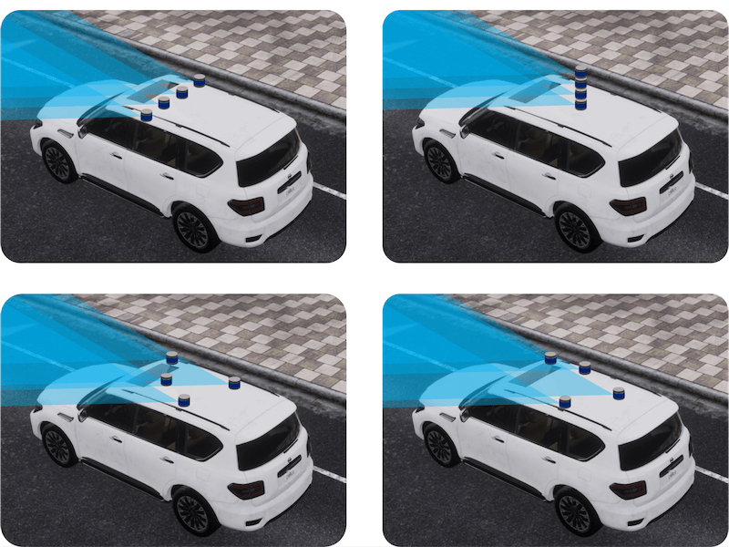
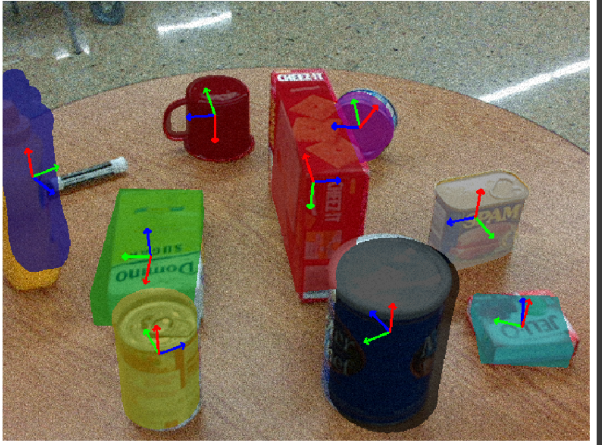
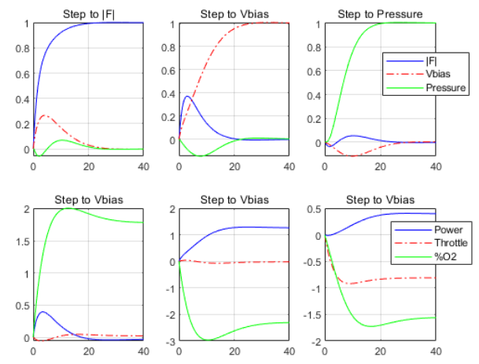
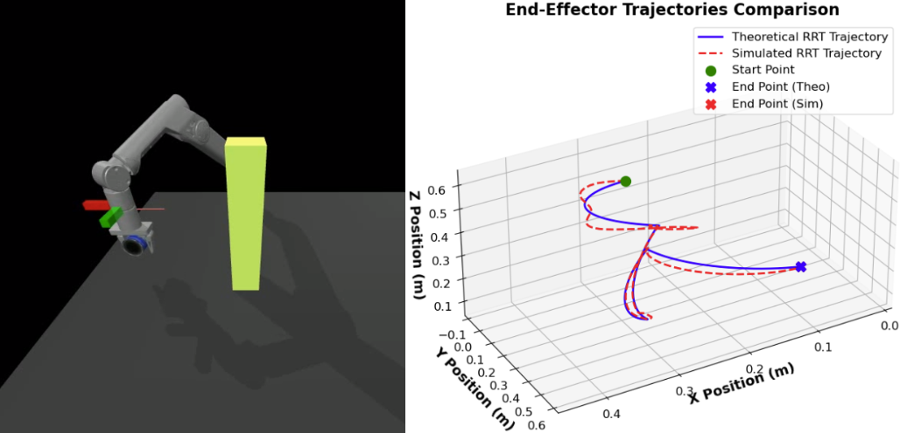
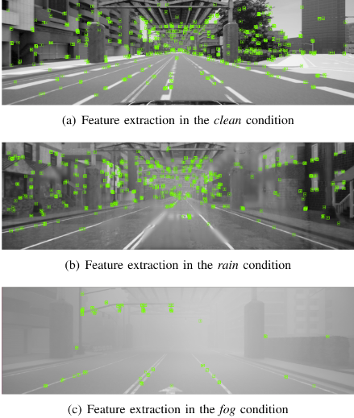
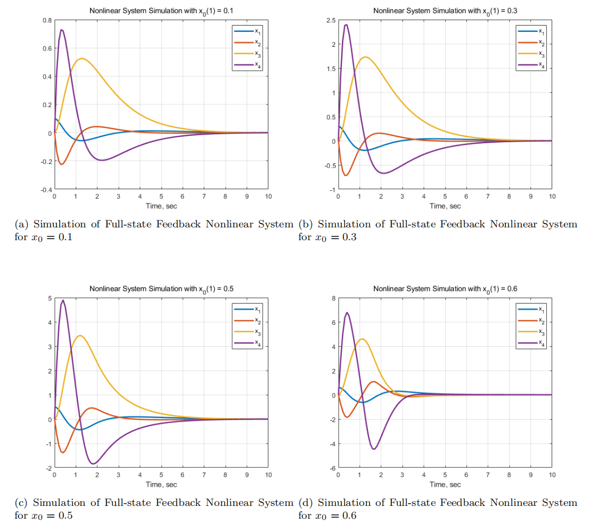

{kind=link}
News
|
|
Publication
|  |
Advances in Neural Information Processing Systems (NeurIPS), 2024. [Spotlight] [paper] |
Projects

|
Learning Latent Dynamics for Robotic Pushing Task Use VAE to learn latent dynamics to control and plan a Franka Robot for robotic pushing task. [Code] |
|  |
6-DOF Pose Estimation based on PoseCNN A implementation of PoseCNN for 6D pose estimation and the corresponding evaluation under noise. [Code] |
|  |
Multivariable Feedback Controller Design Control design for the Reactive Ion Etching (RIE) process using linear quadratic regulator and loop transfer recovery. [PDF] |
|  |
RRT Collision-Free Path Planning for Robotic Grasping This project provides a MuJoCo simulation environment for a robotic arm designed to generate trajectories for grasping objects within a predefined scene. [Code] |
|  |
Towards Robust Outdoor SLAM under Any Condition Robustness evaluation and enhancement for mobile robots under adverse condition. [PDF] |
|  |
Nonlinear Controller Design for Cart Pole Design of nonlinear controller and observer for balancing an inverted pendulum on a cart pole. [PDF] |